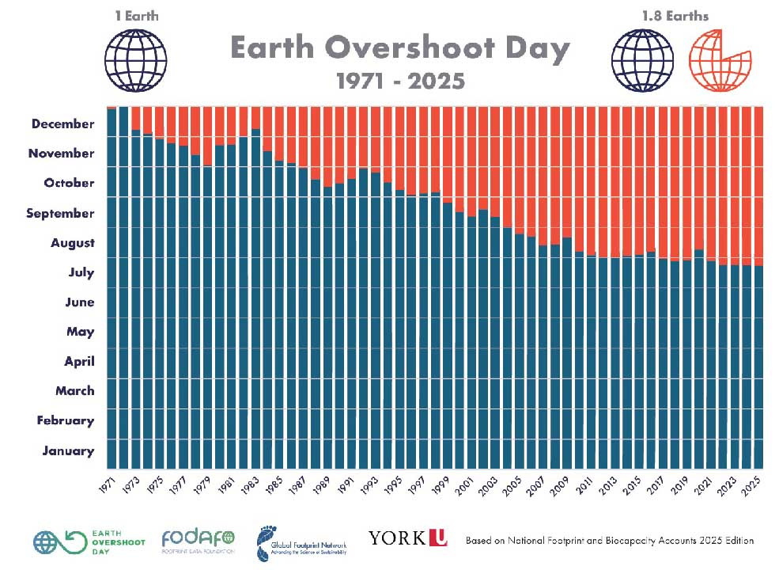

Earth Overshoot Day, Global Footprint Network

Graphique représentant notre impact environnemental croissant depuis 1971.
Source
Global Footprint Network est un organisme de bienfaisance à but non-lucratif. Leur objectif est d'analyser l'état actuel de l'environnement, de remettre en question nos comportements, et d'apporter des solutions durables aux problématiques écologiques de notre époque. Son approche est centrée sur la biocapacité de notre planète, qu'il confronte à nos besoins, ou plutôt nos néo-besoins. Dans le cadre de leurs études, l'organisme a baptisé sous le nom d'« Earth Overshoot Day » le jour de l'année où l'impact environnemental de l'humain dépasse ce que notre planète est capable de générer dans la même période. Cette statistique précise montre explicitement le déséquilibre entretenu par l'homme depuis plus de cinquante ans, entre ce que l'on exploite de notre environnement et ce qu'il est capable de renouveler.
Ce site regroupe les annexes, souvent illustrées, d'un mémoire de Design Numérique. Si vous souhaitez naviguer par page/annexe, cliquez sur ce lien afin de retourner à l'accueil : Accueil
Il a été modestement conçu pour être le plus éthique afin de rester en cohérence avec le travail de recherche qu'il accompagne. Son poids sur les serveurs est minimisé au maximum, et permet en même temps d'efficacement illustrer le propos de l'objet d'édition produit en parallèle. Ainsi, moins d'encre est utilisé. Son code-source est entrièrement open-source et accessible à qui le souhaite via ce lien github : Fichiers sources du site
Vous pouvez également accéder aux portfolio de l'élève via ce lien : Portfolio